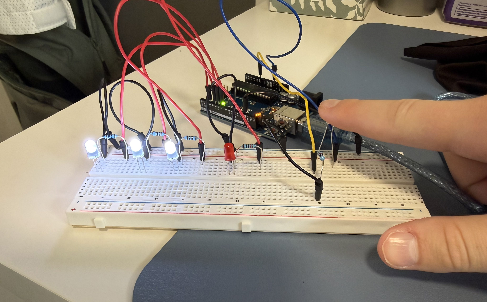
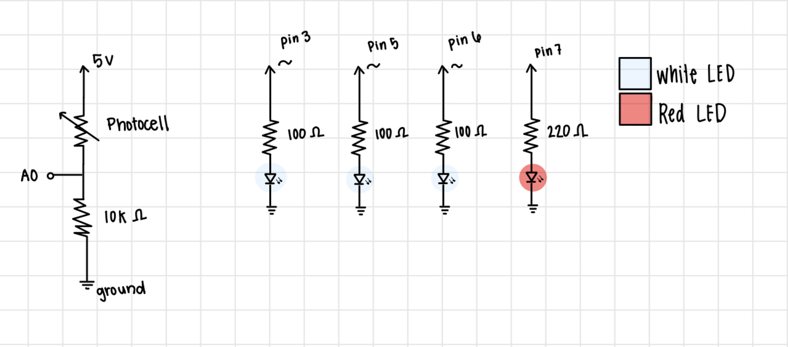
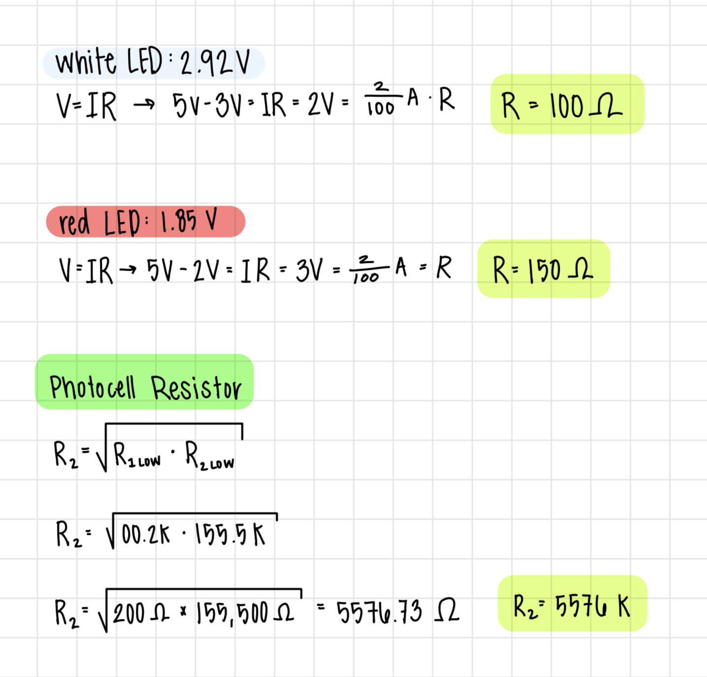
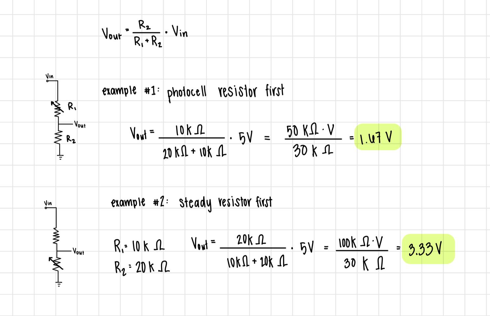

A3: Input Output
For this assignment, we were tasked with creating a circuit containing more than one
LEDs and a variable resistor in a voltage divider. For mine, I was inspired by dawn-to-dusk lights, which
are lights that turn on ocne it gets dark outi. I used 3 white LEDs to light up at a brightness that
depends on the sensor value of a photocell resistor, getting brighter as the resistor value
decreases (gets darker). Then if the photocell resistor value is below a certain threshold,
the red LED will turn on.

This is an image of my final circuit built on a breadboard and connected to the Arduino.
All 4 LEDs are in parallel branches, and each have their own resistor,
Thew hite LEDs are connected to the digital PWM pins 3, 5, and 6 and the red LED is
connected to pin 7. The photocell resistor is connected to A0.
Circuit Diagram

Here is the schematic diagram for my circuit.
Each branch with an LED contains one LED and one resistor.
I used a parallet curcuit for the LEDs to ensure voltage was constant across each LED.
The photocell resistor is also in its own branch with a 10k ohm resistor.
Choosing Resistors

To choose the right resistors for each branch, I started by measuring the voltage drop through each LED.
The white LED had a voltage drop of 2.92V and the red LED had a drop of 1.85 V, so I rounded up to either
2.0 or 3.0 volts for each LED. I knew the arduino provided 5 volts of power and I wanted a current of 20 mA.
Then I used Ohm's Law (V = IR) to calculate the resistance needed. The result was a 100 or 150 ohm resistor for each branch.
To ensure that my the current would be 20mA or lower, I rounded up, using a 220 ohm resistor for each the red LED, since there
is no 150 Ohm resistor in the kit.
For the photocell resistor branch, since it is a voltage divider circuit, I used the geometric
mean of the maximum and minimum resistance values of the photocell resistor to determine the fixed
resistor value. The max value I measured useing the mutlimeter was 155.5K Ohms and the minimum value was
0.2K Ohms. Using the geometric mean formula, I calculated a resistor value of about 5.5K Ohms.
To ensure that I was limting the current enough, I rounded up to using a 10K Ohm resistor.
Final Circuit GIF

Here is a GIF of the final circuit. The white lights increase in brightness as the photocell
sensor value decreases, which happens when it gets darker.
If the sensor value goes below a certain threshold, the red LED will turn on. This is simulated
in the GIF throught the use of a brown cloth covering the photocell resistor to decrease the light reaching it.
Additional Questions
1: In your voltage divider, can the variable resistor be either R1 or R2 or does it need
to be one or the other? Justify your answer with example calculations.

In my voltage divider, the variable resitor order matters and R1 needs to be the variable resistor (the photocell resistor in my case).
This is because in my circuit, the input pin is after R1.
It is important for the variable resistor to be R1 because as the resistance of the photocell resistor changes,
the voltage at the input pin will change accordingly.
Using the votlage divider formula Vout = Vin * (R2 / (R1 + R2)), where Vin is 5V from the Arduino we can see that if the resistors are
different values, the order matters.
In the image here, the steady resistor is 10K Ohm and for this example the photocell resistor R1 is set to 20K Ohms.
When the photocell resistor is 20K Ohms, the voltage at the input pin is 1.67V. When the photocell resistor is second
R2, the voltage at the input pin is 3.33V. This shows that the voltage at the input pin changes based on which resistor is variable.
2: Draw a graph where the x-axis is time and the y-axis is voltage. Plot the voltage at
V-measure (where your pin is reading the voltage) of your voltage divider of your shared gif/video.

3: AnalogWrite and analogRead are respectively 8-bit and 10-bit values.
Imagine you had 10-bit PWM and a 16-bit analog-to-digital converter instead.
How would this change your map() code? Explain your answer.
If I were using a 16-bit analog-to-digital converter instead of a 10-bit, and 10-bit PWM instead of 8-bit, the "standard"
map function would be map(value, 0, 65535, 0, 1024). This is because a 16-bit ADC can represent values from 0 to 65535 (2^16) and
a 10-bit PWM can represent values from 0 to 1023 (2^10 - 1).
In my specific code, the new map function would be map(sensorValue, 12800, 40960, 1024, 0).
This is to maintain the inverse relationship between the sensor value and LED brightness. Additionally, in my current code the sensorValue
has been constrained between 200 and 650. Therefore I would use the equivalent values scaled to 16-bits, which are
12800 = (200 * 65535 / 1023) and 40960 = (650 * 65535 / 1023).
Arduino Code
const int analogInPin = A0; //intiate A0 as the input pin
int led1 = 3; //intiating led1 to PWD pin 3
int led2 = 5; //intiating led2 to PWD pin 5
int led3 = 6; //intiating led3 to PWD pin 6
int led4 = 7; //intiating led4 to pin 9
int sensorValue = 0; // variable to store the value coming from the sensor
int outputValue = 0; // value output to the PWM (analog out)
void setup() {
Serial.begin(9600); //intiative serial
}
void loop() {
int val = analogRead(analogInPin); // read the value from A0 and set the sensor value equal to it
int sensorValue = constrain(val, 200, 650); // constrain the sensor values that are collected to values between 200 and 650
outputValue = map(sensorValue, 200, 650, 255, 0); // map the sensor values to the brightness values inversely (as the sensor value increases, decrease the brightness)
analogWrite(led1, outputValue); // make led1 light up at brightness corresponding to the input sensor value
analogWrite(led2, outputValue); // make led2 light up at brightness corresponding to the input sensor value
analogWrite(led3, outputValue); // make led3 light up at brightness corresponding to the input sensor value
if (sensorValue == 200){ // if statement where if the sensor value is reading 200
analogWrite(led4, 255); // make led4 light up a FULL brightness
}
if (sensorValue != 200){ // when the sensor does not read 200
analogWrite(led4, 0); //set led4 brightness to zero
}
delay(20); // wait 20 milliseconds before reading a new LED value
Serial.print("sensor = "); // print "sensor value ="
Serial.print(sensorValue); //print the sensor value
Serial.print("\t output = "); // print a tab space and "output ="
Serial.println(outputValue); //print the input value
}